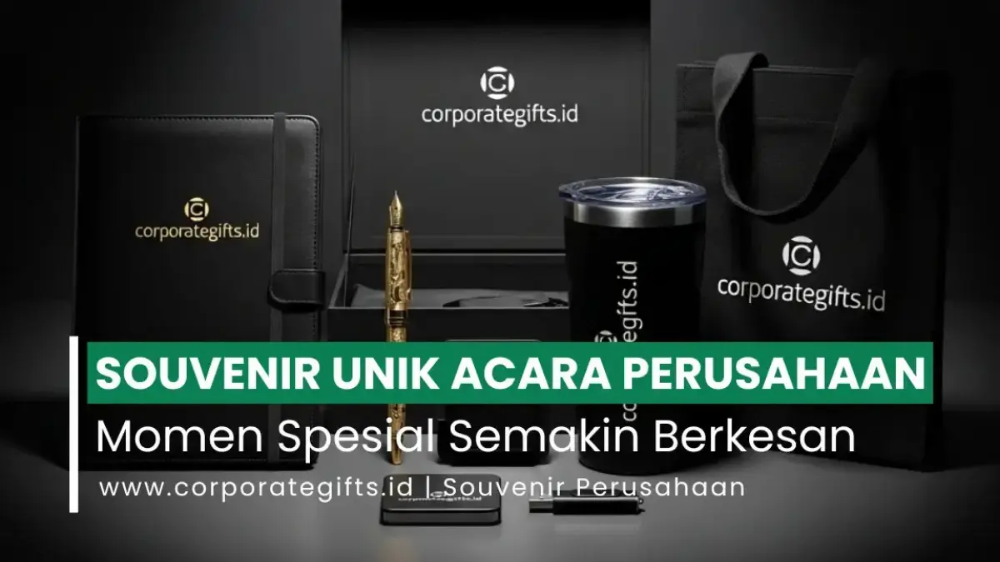

Corporate Gifts ID - Souvenir unik untuk acara perusahaan adalah cinderamata custom yang memadukan nilai fungsionalitas harian, keselarasan tema seremonial, dan ketegasan identitas visual brand, seperti tumbler stainless custom, buku catatan agenda kulit, powerbank berlogo gravir, hingga tas tote bag kanvas ramah lingkungan. Seleksi cinderamata terbaik senantiasa dikurasi berdasarkan format kegiatan, karakteristik demografi peserta, dan alokasi anggaran agar meninggalkan impresi mendalam sekaligus memperkuat reputasi profesional korporasi.
Dalam dinamika lanskap bisnis modern, setiap perhelatan acara perusahaan bukan sekadar agenda ramah tamah atau pertemuan internal biasa, melainkan momentum strategis untuk mengukuhkan reputasi merek di benak klien, mitra bisnis, serta seluruh staf karyawan.
Poin Kunci Souvenir Acara Perusahaan:
- Investasi Apresiasi: Cinderamata bertindak sebagai ungkapan terima kasih fisik yang membangun ikatan emosional peserta terhadap institusi.
- Fungsionalitas Tinggi: Barang yang sering digunakan dalam rutinitas kerja menjamin kehadiran logo perusahaan secara berkelanjutan.
- Segmentasi Acara: Membedakan konsep suvenir untuk event santai (gathering), forum formal (seminar/MICE), hingga momen selebrasi (anniversary).
- Diferensiasi Desain: Sentuhan kustomisasi nama atau grafir presisi menciptakan rasa eksklusif tanpa harus berbiaya mahal.
Mengapa Souvenir Penting dalam Setiap Acara Perusahaan?
Kehadiran cinderamata dalam agenda korporat memegang peranan krusial sebagai media komunikasi visual tidak langsung. Saat menyelenggarakan seminar edukatif, employee gathering tahunan, peluncuran produk inovatif, maupun rapat kerja strategis, suvenir menjadi jangkar memori atas atmosfer positif yang terjalin sepanjang acara.
Melalui kurasi souvenir yang berkesan dan berdaya guna tinggi, perusahaan menanamkan persepsi profesionalisme tingkat tinggi. Cinderamata yang terus dipakai penerima juga bekerja sebagai instrumen pemasaran pasif yang memperkokoh loyalitas mitra serta mempererat ikatan kekeluargaan internal tim.
Souvenir Unik Apa yang Cocok untuk Setiap Jenis Acara Perusahaan?
Kesesuaian suvenir ditentukan oleh atmosfer acara dan profil penerima. Berikut pemetaan kategori suvenir berdasarkan peruntukan acara:
1. Gathering Tahunan dan Family Day
Untuk agenda outdoor atau rekreasi santai, pilih barang-barang yang ringan, penuh warna, dan mendukung mobilitas seperti kaos polo dry-fit custom, tumbler air minum berinsulasi, atau topi kanvas bertema seragam regu. Suvenir ini langsung memupuk rasa persatuan dan kekompakan tim kerja.
2. Seminar, Workshop, dan Training
Acara formal edukatif menuntut kelengkapan paket seminar kit yang fungsional, berisi buku catatan hardcover, pulpen metalik berukir logo, serta pouch organizer. Desain yang bersih dan elegan memberikan kesan kredibilitas tinggi bagi para peserta dan pemateri.
3. Ulang Tahun Perusahaan atau Hari Apresiasi Karyawan
Momen selebrasi tonggak sejarah instansi sangat selaras dengan cinderamata bernuansa personal, seperti mug keramik edisi terbatas, gantungan kunci kulit ukir nama, atau lilin aromaterapi relaksasi yang disisipi kartu ucapan terima kasih dari jajaran direksi.
4. Peluncuran Produk atau Brand Baru
Dalam event promosi publik, cinderamata bertugas memancarkan identitas visual produk terkini. Opsi ideal mencakup perangkat teknologi seperti powerbank tipis berlogo LED, flashdisk kartu grafir, atau tote bag ramah lingkungan bermotif visual kampanye baru.
Rekomendasi Souvenir Unik untuk Acara Perusahaan
Daya tarik cinderamata tidak selalu bergantung pada besaran harga satuan, melainkan pada keunikan ide, kualitas material, dan relevansi pemakaiannya. Berikut beberapa inspirasi pilihan:

Kombinasi paket souvenir ramah lingkungan dan perkakas kantor fungsional siap custom logo perusahaan.
Kategori Formal dan Eksekutif
- Set Pulpen Logam & Agenda Kulit: Solusi standar emas bagi dewan direksi, tamu VIP, dan rekanan bisnis terhormat.
- Powerbank Fast Charging Berlogo: Sangat diminati peserta yang memiliki mobilitas tinggi dan kerap bertugas di luar kantor.
- Kotak Kartu Nama Kayu Solid: Memancarkan cita rasa estetika alami yang mewah di atas meja kerja pimpinan.
Kategori Santai dan Gathering
- Tumbler Stainless Custom Grafir Nama: Menghindari tertukarnya botol minum sekaligus mendukung gerakan minim sampah plastik.
- Pouch Travel Multifungsi: Wadah praktis untuk menyimpan kabel charger, obat-obatan pribadi, atau perlengkapan sanitasi.
- Souvenir Pisah Sambut Kantor: Cinderamata personal seperti mug foto kenangan atau plakat akrilik untuk rekan kerja yang menempuh promosi atau mutasi.
Kategori Ramah Lingkungan (Eco-Friendly)
- Tote Bag Kanvas Organik: Memiliki masa pakai bertahun-tahun serta menjadi media promosi luar ruang yang tahan lama.
- Cutlery Set Bambu & Sedotan Stainless: Mendukung komitmen perusahaan dalam program keberlanjutan lingkungan (ESG).
- Tanaman Hias Meja Mini: Simbol pertumbuhan kemitraan yang menyejukkan ruang kerja kantor.
| Jenis Acara Perusahaan | Rekomendasi Cinderamata | Karakteristik Produk | Manfaat Nilai Branding |
|---|---|---|---|
| Gathering & Outing | Tumbler nama, Kaos dry-fit, Pouch | Santai, ceria, mendukung aktivitas luar ruang | Membangun kebersamaan dan kekompakan tim |
| Seminar & Workshop | Agenda kulit, Pen metal, Flashdisk kartu | Formal, rapi, fungsional saat mencatat | Memperkuat citra institusi profesional dan kredibel |
| Corporate Anniversary | Gift set aromaterapi, Mug tim, Plakat eksklusif | Sentuhan personal, berkesan prestisius | Meningkatkan rasa bangga dan loyalitas karyawan |
| Product Launching | Powerbank LED, Speaker mini, Totebag kanvas | Modern, mengikuti tren gaya hidup digital | Memperluas jangkauan eksposur produk baru |
Bagaimana Cara Menyesuaikan Souvenir dengan Tema Acara?
Agar cinderamata mampu menyalurkan pesan korporat dengan tepat sasaran, perhatikan tiga prinsip penyelarasan berikut:
- Harmonisasi Identitas Visual: Selaraskan skema warna pembungkus dan pita dengan palet pedoman identitas brand (corporate brand guideline) perusahaan Anda.
- Aplikasi Teknik Cetak Presisi: Terapkan sablon berkualitas tinggi, grafir laser permanen, atau emboss elegan agar logo tampil proporsional tanpa merusak estetika barang.
- Bermitra dengan Vendor Kredibel: Gandeng penyedia jasa suvenir profesional yang sanggup memberikan konsultasi mockup digital, menjaga mutu produksi seragam, serta menepati tenggat waktu pengiriman secara tepat.
Contoh Penerapan Souvenir dalam Acara Perusahaan
Sebagai gambaran nyata, sebuah korporasi teknologi yang menggelar rapat kerja tahunan (annual meeting) dapat membagikan tumbler kopi berinsulasi tahan panas yang terbuat dari bahan baja tahan karat food-grade. Cinderamata ini secara langsung menunjang produktivitas rapat peserta sekaligus mendukung kampanye ramah lingkungan kantor tanpa kertas dan plastik.
Saat peserta membawa tumbler tersebut ke meja kerja masing-masing pasca-acara, identitas visual perusahaan akan terus terlihat secara berkesinambungan tanpa perlu mengeluarkan biaya promosi tambahan.
Mengapa Souvenir Menjadi Strategi Branding yang Efektif?
Cinderamata bertindak sebagai strategi branding yang sangat berdaya guna karena berada langsung dalam kepemilikan pribadi penerima. Setiap kali barang tersebut digunakan di lingkungan kantor, kedai kopi, atau transportasi umum, brand Anda secara alami diperkenalkan kepada jejaring sosial di sekeliling mereka.
Pertanyaan Seputar Souvenir Acara Perusahaan (FAQ)
Kesimpulan
Memilih souvenir unik untuk acara perusahaan bukan hanya sebatas tradisi membagi-bagikan cinderamata seremonial, melainkan langkah terencana dalam menancapkan citra positif korporasi. Dengan mengutamakan fungsionalitas barang, desain visual yang selaras, serta dukungan vendor yang berpengalaman, setiap momen perusahaan Anda akan terpatri indah dalam ingatan seluruh peserta.
Konsultasikan kebutuhan pembuatan cinderamata unik acara perusahaan Anda bersama tim spesialis Corporate Gifts ID. Dapatkan penawaran harga terbaik dan sampel produk eksklusif sekarang juga.